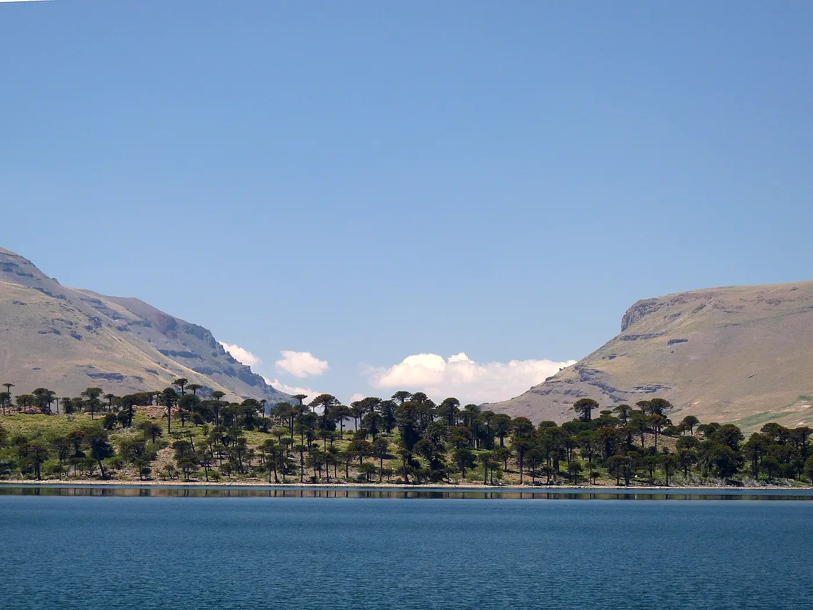

Laguna Escondida y Puente de Piedra

1 / 1
Caviahue y alrededores · Verano
Una laguna a pocos minutos del centro y un puente natural de roca sobre el río, ideales para una tarde.
La laguna y el puente natural son dos lugares distintos. Consultá cada ubicación en Google Maps para planificar los traslados desde Caviahue.
Ubicación
Laguna Escondida
Ver Laguna Escondida en Google MapsPuente de Piedra
Ver Puente de Piedra en Google MapsTu lugar en Caviahue
Departamentos, cabañas y hostal boutique para disfrutar de la Patagonia con tu familia, amigos o pareja.